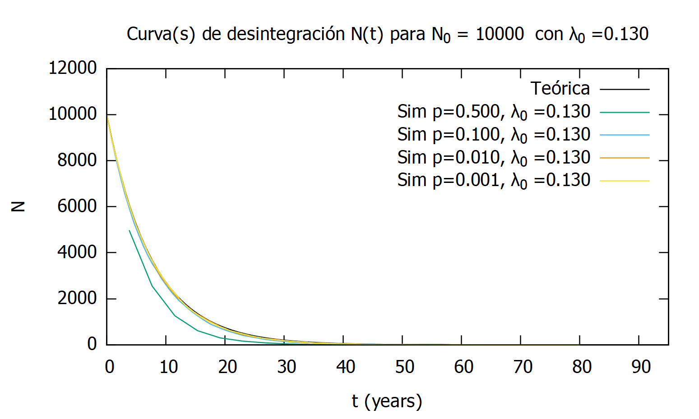

Ejercicio 2¶
-
int ejercicio2(const char [] outPath) - Parameters
- outPath: string
Directorio a utilizar para la salida de los archivos de datos de las diversas simulaciones. Comprobado y/o creado mediante
checkAndCreateDirectory()
Durante la ejecución del código del ejercicio 2, se procederá a la simulación de la desintegración completa de un conjunto de N_0 núcleos activos de Cobalto 60. Mediante esta simulación, podremos comprobar el comportamiento estadístico de la presencia de núcleos activos así como su relación con la ley de decaimiento exponencial.
(1)¶\[N(t)=N_{0} e^{-\lambda t}\]En el código de este ejercicio se facilita la opción de realizar una simulación parametrizada mediante:
- maxScenarios: int
Número de escenarios distintos que se analizarán.
- maxTime: int
De cara a la representación gráfica de los resultados, se da la posibilidad de ampliar o reducir el límite de tiempo a representar en dichas gráficas, pudiéndose así focalizar en las zonas deseadas de la misma. Una vez introducido este parámetro, las entradas del archivo de datos generado se verán alteradas así como su correspondiente representación. (Aplica a todos los casos en conjunto)
- N_0: int[]
Cantidad inicial de núcleos a desintegrar. (Por caso estudiado)
- p_disintegration: float[]
Probabilidad de desintegración de cada núcleo en cada paso del proceso. (Por caso estudiado)
- lambda_0: float[]
Parámetro característico del los núcleos a simular (Cobalto 60 : 0.13), que describe el comportamiento de dichos núcleos en función del tiempo. (Por caso estudiado)
En este caso, nos ceñiremos a la simulación de los casos planteados en la PEC, que constan de los siguientes datos:
>>> N_0 = 10000, p_disintegration = 0.5, lambda_0 = 0.13 >>> N_0 = 10000, p_disintegration = 0.1, lambda_0 = 0.13 >>> N_0 = 10000, p_disintegration = 0.01, lambda_0 = 0.13 >>> N_0 = 10000, p_disintegration = 0.001, lambda_0 = 0.13
Nota
Hemos de tener en cuenta que el código de este ejercicio está orientado a la comparación de distintas casuísticas equivalentes así como la curva teórica de las mismas. Es por esto que es necesario introducir unos valores acordes a esta curva, es decir, si los parámetros que definen la curva teórica (lambda_0) no son iguales para todas las representaciones, la gráfica generada no incluirá la curva teórica puesto que no habrá una única curva que defina el comportamiento de la simulación.
Para cada una de las casuísticas planteadas, se realizará el siguiente proceso:
Seguiremos la metodología del
ejercicio1()a la hora de simular las desintegraciones pero en este caso, utilizaremossimulateFullDisintegration()para simular el proceso completo de desintegración, de modo que:>>> 0000000000 -> 0001000101 ... -> 1111111111
Esta función se encargará de simular la desintegración completa del conjunto, almacenando los datos de tiempo y núcleos activos en dos arrays bidimensionales,
t[][]ydisintegrations[][]respectivamente, para su posterior graficación.Así mismo, esta función devolverá los tiempos de desintegración y semidesintegración del conjunto, que podremos comparar posteriormente con los resultados teóricos del Cobalto60.
Una vez obtenidos estos resultados, utilizaremos GNUPlot para graficar los datos obtenidos en los escenarios analizados así como la curva teórica que definirá el comportamiento de los mismos.
Como podemos comprobar en la siguiente figura, los datos obtenidos en la simulación se corresponden con la curva teórica en gran medida, a excepción del primer caso, dado que al tratarse de un valor de dt tan elevado (del orden de 3 años por etapa de simulación), los resultados se vuelven poco fiables, pero a medida que elevamos el número de etapas y reducimos el valor de dt, la precisión así como la concordancia de dichos datos aumentan.
Comparación de simulaciones de desintegraciones completas de diversos conjuntos de tamaño N_0 = 10000 junto con su curva teórica.¶
Sin embargo, no podemos concluir lo mismo cuando se trata de la representación de los datos cuando t>50 años. Cuando la desintegración se acerca al final, es decir, cuando el número de núcleos activos es muy bajo, la variación de los resultados es mucho mayor dado que el factor aleatorio es mucho más decisivo, por lo que, con un único muestreo, obtenemos resultados poco fiables como podemos comprobar en las siguientes figuras. Para mejorar estos resultados, sería necesario, igual que con el ejercicio 1, aumentar los ciclos de simulación y ponderar los resultados, de forma que, a lo largo de toda la simulación, la variación de núcleos activos en cada etapa tienda a cero.
Este suceso ocurre a lo largo de todo el periodo de desintegración, pero es mucho menos notable dado que esta diferencia de núcleos activos es mucho menor en comparación con los núcleos activos. Es decir:
\[N(t) >> \Delta N\]

Vista en detalle del proceso de desintegración del Cobalto60 para t>50 años.¶